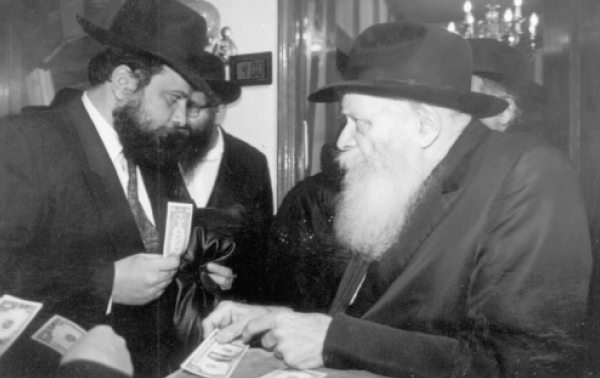

Powerful Encounters with the Rebbe
A compilation of stories about the Rebbe and Chassidim that were told by R’ Yekusiel Farkash of Yerushalayim.

12
A year later, 5740, I took my wife for the first time to the Rebbe and we also brought my son Mordechai [today, a shliach in Bellevue, Washington] and my daughter Sheindel, who was a baby [today, the wife of the shliach in Cyprus, Zev Raskin]. My son, knowing what happened to his brother in yechidus, prepared the Gemara he had been learning well so he wouldn’t be caught unprepared.
This time, the Rebbe hardly addressed me, and he also did not address the children. He gave all his attention to my wife and said to her, “Since they told me that you are the granddaughter of R’ Amram Blau and he would write to me, and he learned Chassidus, Tanya, Likkutei Torah etc. and he conducted himself with forcefulness and was successful—in his home it goes without saying since we see that, but even with people on the outside he was successful—therefore, since you are his granddaughter, you need to go with his forcefulness and publicize all over that since love and fear of Hashem are mitzvos that women are obligated in, being constant mitzvos as it says in the introduction to the Chinuch, and since in the Laws of Talmud Torah it says that women are obligated to learn those parts of Torah that pertain to the mitzvos they are obligated in, and since the Rambam says that in order to attain fear and love of G-d it is through meditating on those things which lead to that, women are obligated to learn maamarei Chassidus which deal with love and fear of G-d and by doing so, it will bring an increase in all the blessings etc.”
At this point, the Rebbe blessed us with an unusual bracha; now is not the place to go into detail.
13
One of the years that I spent Tishrei with the Rebbe, on the night of Shmini Atzeres we pushed to get a place for hakafos opposite the Rebbe’s platform. Behind me stood a thin young man who looked like a typical Chabad Chassid with a black hat, sirtuk and gartel. I overheard an embittered conversation between him and a distinguished Lubavitcher from Yerushalayim. He poured out his heart and said, “I am here for over a month already. I came for 18 Elul, and I don’t know whether I exist for that man [referring to the Rebbe].
This was because in Chabad one does not give “shalom” to the Rebbe and you only see the Rebbe when he comes in for davening and farbrengens. There is hardly any personal attention for anyone. So it works out that the entire time you only see the Rebbe from a distance and you get no personal recognition, which is very hard for someone who is not used to this. This is what that man was complaining about. The Chassid from Yerushalayim tried to reassure him, saying the Rebbe knows what is going on with everyone; it’s just that due to technical reasons, it does not work out to get personal attention. But this did not sit well with the man and he was not at all reassured.
That year, the Rebbe led all the hakafos and before each one there was a sicha, at the end of which he announced who would join this hakafa [rabbanim, those who taught Torah, and the like]. It should be pointed out that in actuality, usually, aside from those who were standing near the platform around which they danced with sifrei Torah, very few people joined the hakafa they belonged to. This was because it was a “one way ticket” in that they would be unable to return to the spot they had worked so hard to get.
At the fourth hakafa which corresponds to the s’fira of netzach, the Rebbe announced that whoever served in the Israeli army whether on a regular basis or in the reserves, was honored with this hakafa. Suddenly, the Rebbe pointed from the platform on which he stood, toward that unfortunate man who had thought the Rebbe did not know he was there, and then toward the platform as though to say: Why are you standing in your place when you belong to this hakafa?
It turned out that this man was a driver for Egged and served in the reserves.
14
That night, after the hakafos, some of us went to eat the holiday meal with R’ Moshe Klein, the scribe and mohel. We sat there and farbrenged and the topic of conversation was the number of open miracles we saw that year. That the Rebbe had identified people that he apparently had never met before. I told of the open miracle that I was witness to a few hours earlier.
Rami Antian a”h was at that gathering. At that time, he was a new baal t’shuva who had been in 770 for a few months. His story in brief was that that year was America’s bicentennial. In connection with that, countries had sent ships to the flotilla in honor of the occasion. He was the journalist sent with one of the ships from Israel to document the event and tell the readers of the newspaper about the festivities.
Lubavitchers went every day to the ship and brought the sailors, journalists and others to the Rebbe for t’fillos, etc. Rami was blown away and decided to stay in 770.
The next night, Motzaei the holiday, when the Rebbe gave out kos shel bracha, I stood on line like everyone else in the beis midrash and watched the Rebbe. I noticed Rami passing by and the Rebbe switching the cup from his right hand to his left and waving his right hand upward and saying something and smiling broadly.
I could not hear what was said but when he came down from the platform, Rami noticed me and ran over and said, “In continuation of the wonders we were talking about yesterday, I just passed by the Rebbe and the Rebbe raised his hand and said, ‘How are you Rami?’
“How incredible! I never told the Rebbe that I am called Rami. In my pidyon nefesh I wrote my full name, Rachamim, but the Rebbe even knows my name of endearment!”
15
Around the year 5746, my financial situation wasn’t good. Our house was full of little children and parnasa was needed and it reached a point where obtaining basic staples was an issue. In those days, I was by the Rebbe for Shavuos in the course of which one of the heads of a beautiful Chabad community abroad, where they have schools for boys and for girls, came over to me. He offered me a job serving as rav of the community and also as rosh yeshiva of the local Tomchei T’mimim after the passing of the previous rav and rosh yeshiva.
The conditions were superb, especially my being in such a precarious financial situation in which I was borrowing to buy basic food supplies without having a reasonable way to repay the loans. I was thrilled by the offer. But I had to ask the Rebbe first. I should mention that it seemed obvious to me and whoever heard the offer that this was something which would definitely get the Rebbe’s approval, both because the Rebbe was well aware of my circumstances which I constantly reported about and because there was no possibility at that time for me to send the children to Chabad schools because of family reasons. This could be the opportunity which would enable me to carry out that important step. The leaders of the community also thought it was a foregone conclusion, to the point that they said they were buying me a ticket so as to be able to introduce me to the other rabbanim of the city, etc.
I wrote the details of the offer to the Rebbe and waited for his blessings for success. But the answer was most surprising. It said: Why move from the Holy Land? Especially when you are successful there! The Rebbe put three lines under the words “successful there.” What did the Rebbe mean by “why move” when I had prefaced my letter with the words “the Rebbe knows my financial state etc. and the problem with chinuch in Chabad mosdos?” I certainly could not understand how I was “successful there” when I was for all intents and purposes unemployed and borrowing to eat.
But needless to say, my financial situation began to improve in a wondrous way and I took a job whose salary was three times that of the previous one and everything worked out.
16
One of the most moving events that I experienced by the Rebbe was on Simchas Torah 5743, which was one hundred years since the passing of the Rebbe Maharash.
In order to get a place from where to observe the Rebbe’s hakafos, we pushed back and forth as described before. There was no possibility for lofty meditations and the like, since the entire crowd was focused fully on hearing the verses of “Ata Horeisa” from the Rebbe and to see the Rebbe during the hakafos.
The Rebbe came in and went up on the high platform, which in those years they had begun to raise higher and higher so people could see and hear. The Rebbe placed his siddur on the lectern, turned to the crowd, and began singing the niggun of the Rebbe Maharash, “L’chat’chilla Aribber.”
In time with the niggun, the Rebbe bent his body and encouraged the singing in an unusual way and suddenly, we were inspired with a storm of emotion of thoughts of repentance. Tears began to pour. As I said, this was without any preparation or intention; rather, we felt how the Rebbe was lifting us up from the pit of materialism to a world of pure spirituality. For a moment I wondered whether this was happening only to me or whether everyone was experiencing it. I was amazed to see that even bachurim and men who were hanging by their gartels from the ceiling, and even those who seemed to be tough and coarse were all crying with an otherworldly inspiration. After the hakafos, this was the talk of the day and it was regarded as a wonder.
17
In the 1970’s I was walking up to Yeshivas Toras Emes which was located on the edge of Mea Sh’arim. I met a bachur who had just come back from the Rebbe. He joined me as I walked and told me about the Rebbe and Chassidus [this was when I was getting involved with Chabad and was still within another framework and only occasionally did I go visit the yeshiva]. He told me the following:
When people had yechidus with the Rebbe, they would write their questions and requests on a paper. The Rebbe would look at the paper and make various marks of which we have no idea their significance, and then he would speak to the person and refer to things he had written [and to some of the things he would not respond].
This bachur had something he was embarrassed to tell the Rebbe, but knowing that this was the time and place, he very much wanted the Rebbe’s advice and did not know what to do. He finally decided not to write about the problem on the note but he made this sign for himself; knowing the enormity of the awe and self-negation [which is no exaggeration] that a person felt upon entering for yechidus, to the point that a person could not speak, he decided that if, when the yechidus ended, he still remembered his problem, he would discuss it with the Rebbe.
The yechidus came to an end and the bachur remembered his decision. Having no choice he discussed the issue with the Rebbe. The Rebbe listened and then said: Learn chapter 41 of Tanya by heart until the words, “v’hinei Hashem nitzav alav etc.” and when the evil inclination comes to you, remember – and here the Rebbe gradually raised his voice until it was so loud it could be heard outside the room – that “v’hinei Hashem nitzav alav u’bochein klayos v’lev im ovdo k’ra’ui” (behold, Hashem stands above him and examines kidneys and heart [to see] whether he serves Him properly) and it will run away from you.
Published as a t’shura
for R’ Elimelech Farkash wedding
Beis Moshiach. "Powerful Encounters with the Rebbe." Beis Moshiach, no. 975 (June 2, 2015).